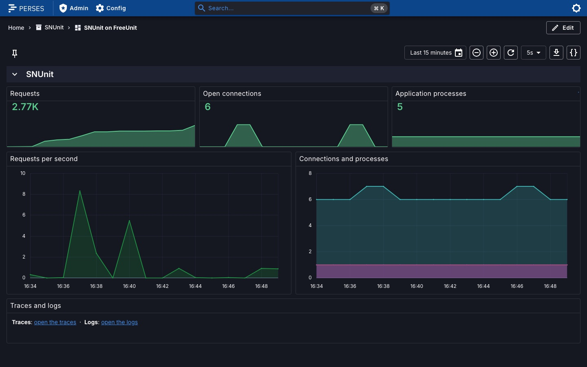
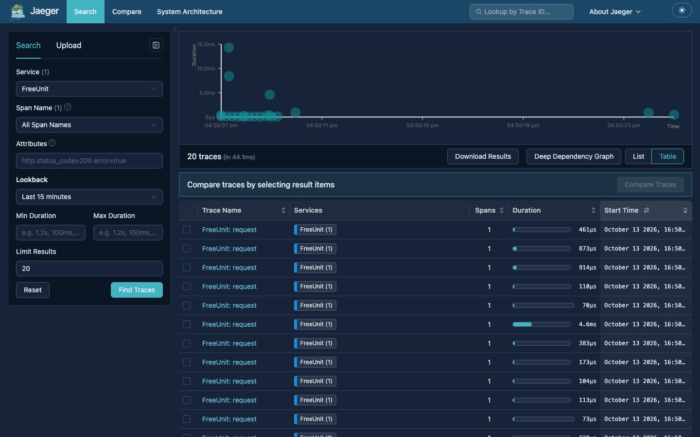
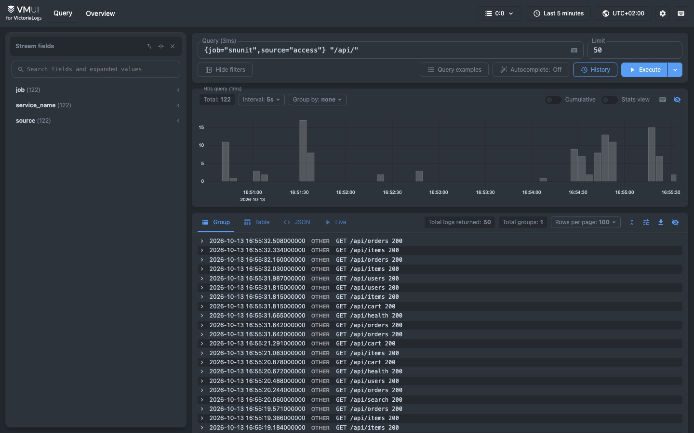
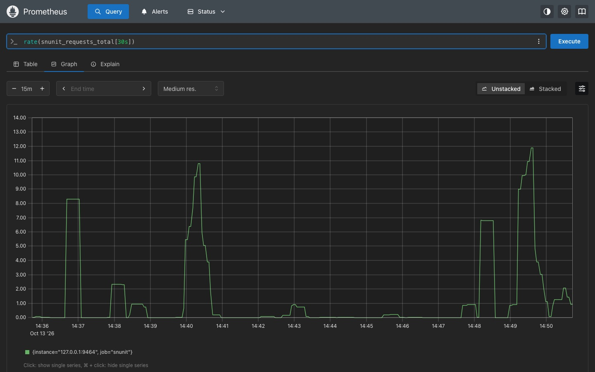

SNUnit runs your Scala Native web app on FreeUnit. Use the libraries you already know — http4s, Tapir, Cask, Undertow, endpoints4s — and get process management, load balancing and restarts for free.
curl -fsSL https://raw.githubusercontent.com/lolgab/snunit/main/install.sh | bash
Write one Scala file with a //> using dep line for SNUnit and run it.
The snunit command line tool builds with Scala Native and serves on port 8080.
snunit run Hello.scala builds and servessnunit run -w rebuilds and restarts on every changesnunit package produces the executable to deploy//> using dep com.github.lolgab::snunit::0.12.1
import snunit.*
@main
def run =
SyncServerBuilder
.setRequestHandler(req =>
req.send(
statusCode = StatusCode.OK,
content = "Hello world!\n",
headers = Headers("Content-Type" -> "text/plain")
)
)
.build()
.listen()A small Scala Native library on top of a battle-tested application server.
Your app embeds unitd, starts it with a generated configuration and runs itself as the application. Nothing to install on the server.
FreeUnit restarts crashed processes and balances requests across multiple application processes, static or dynamic.
Compiled ahead of time with Scala Native: tiny memory footprint and instant startup, with no JVM involved.
Simple blocking servers with Cask, Undertow or endpoints4s, or cats-effect with epoll/kqueue in http4s and Tapir to handle many concurrent requests per process.
Supported by the http4s and Tapir integrations.
UnitConfig covers listeners and TLS, routes, upstreams, HTTP settings, processes, limits, isolation and access logs, all from Scala code.
OpenTelemetry traces, metrics and logs, and snunit run --stack for dashboards, traces and logs running inside FreeUnit. See it.
On SIGTERM, SIGINT or SIGHUP in-flight requests finish before exit. A watchdog cleans up even after SIGKILL.
Use snunit with scalino, or add unitd to an executable built with sbt, Mill or scala-cli.
Prebuilt FreeUnit for Linux and macOS, x86_64 and aarch64, downloaded and cached on first use.
Pick your style. Same single-executable deployment.
Extend snunit.Http4sApp and implement routes. Based on the epollcat event loop. snunit-http4s
//> using dep com.github.lolgab::snunit-http4s0.23::0.12.1
//> using dep org.http4s::http4s-dsl::0.23.38
import cats.effect.*
import org.http4s.*
import org.http4s.dsl.io.*
object app extends snunit.Http4sApp {
def routes = Resource.pure(
HttpRoutes
.of[IO] { case GET -> Root =>
Ok("Hello from SNUnit Http4s!")
}
.orNotFound
)
}Describe your endpoints with Tapir. Synchronous and cats-effect interpreters are available. snunit-tapir, snunit-tapir-cats-effect
//> using dep com.github.lolgab::snunit-tapir-cats-effect::0.12.1
import cats.effect.*
import sttp.tapir.*
object Main extends snunit.TapirApp {
def serverEndpoints = Resource.pure(
endpoint.get
.in("hello")
.in(query[String]("name"))
.out(stringBody)
.serverLogic[IO](name => IO(Right(s"Hello $name!"))) :: Nil
)
}Run Cask applications unchanged: routes, decorators and all. snunit-cask
//> using dep com.github.lolgab::snunit-cask::0.12.1
object MinimalApplication extends cask.MainRoutes {
@cask.get("/")
def hello() = "Hello World!"
@cask.get("/hello")
def hello(name: String) = s"Hello $name!"
@cask.post("/do-thing")
def doThing(request: cask.Request) = request.text().reverse
initialize()
}A drop-in replacement for the Undertow builder API, so existing HttpHandlers keep working. snunit-undertow
//> using dep com.github.lolgab::snunit-undertow::0.12.1
import io.undertow.Undertow
import io.undertow.server.{HttpHandler, HttpServerExchange}
import io.undertow.util.Headers
object HelloWorldServer {
def main(args: Array[String]): Unit =
Undertow
.builder()
.addHttpListener(8080, "localhost")
.setHandler(new HttpHandler {
def handleRequest(exchange: HttpServerExchange) = {
exchange.getResponseHeaders.put(Headers.CONTENT_TYPE, "text/plain")
exchange.getResponseSender.send("Hello World")
}
})
.build()
.start()
}A synchronous endpoints4s server interpreter: mix snunit.endpoints4s.Endpoints into your endpoint definitions and pass the result to the server. snunit-endpoints4s
Configure FreeUnit from Scala, no JSON. Http4sApp and TapirApp expose a
unitConfig you override as a ResourceIO; it covers listeners and TLS, routes, upstreams, HTTP settings,
application processes and limits, isolation, access log and telemetry.
//> using dep com.github.lolgab::snunit-http4s0.23::0.12.1
//> using dep org.http4s::http4s-dsl::0.23.38
import cats.effect.*
import org.http4s.*
import org.http4s.dsl.io.*
import snunit.config.*
import scala.concurrent.duration.*
object app extends snunit.Http4sApp {
override def unitConfig = Resource.pure(
UnitConfig(
listeners = Seq(Listener.port(9000)),
application = Application(
processes = Some(Processes.Dynamic(max = 8, spare = 2)),
limits = Some(Limits(timeout = Some(30.seconds)))
),
http = HttpSettings(maxBodySize = Some(1024 * 1024)),
shutdownTimeout = 20.seconds
)
)
def routes = Resource.pure(
HttpRoutes.of[IO] { case GET -> Root => Ok("Hello!") }.orNotFound
)
}TapirApp works the same way: override def unitConfig.
unitConfig is a ResourceIO[UnitConfig] and UnitConfig is a plain case class, so load values with cats.effect.std.Env, from a file or anywhere else:
override def unitConfig = Resource.eval(
Env[IO].get("PORT").map { port =>
UnitConfig().withPort(port.fold(8080)(_.toInt))
}
)HTTPS takes certificate bundles by name:
UnitConfig(
listeners = Seq(Listener(address = "*:8443", tls = Some(Tls(Seq("main"))))),
certificates = Map("main" -> scala.io.Source.fromFile("bundle.pem").mkString)
)One command runs your app with dashboards, traces, logs and metrics, all running inside FreeUnit next to it, already connected. No Docker, no YAML, nothing to wire.
snunit run --stack Hello.scala
The first time, snunit stack install downloads the programs (checksums verified).




A dashboard with the request rate, open connections and application processes, plus links to the traces and logs.
Request rate, connections and processes at a glance, provisioned for you. Built from Perses.
One span per request. The traceparent header reaches your app, so an OpenTelemetry SDK joins the same trace. Built from Jaeger.
JSON access log, FreeUnit log and your app's output, shipped and searchable. Built from VictoriaLogs.
Connections, requests, processes and sidecars as snunit_* metrics, scraped for you. Built from Prometheus.
UnitConfig(
observability = Some(
Observability(
"my-service",
stack = Some(Stack())
)
)
)
// pass it to SyncServerBuilder.setConfig,
// or override unitConfig in Http4sApp / TapirAppThe same from code, where you can also keep the data on disk (dataDirectory) and choose the ports. Already have a stack? Point
otlpEndpoint to your OTLP receiver, logs to a Loki-compatible server and let your
Prometheus scrape the metrics endpoint.
Deploying? snunit stack install --dir /opt/snunit-stack in your image and set
SNUNIT_STACK_DIR.
The programs are modified builds of Prometheus, Jaeger, VictoriaLogs and Perses (all Apache-2.0) that serve their HTTP API through FreeUnit. They are not the official releases and are not made, endorsed or supported by their authors; the names belong to their owners. Archives are named after what they do, with the licenses of every dependency inside. See the licenses and the build scripts. They listen on localhost and have no login: put your own authentication in front before exposing them.
Start the executable and it launches FreeUnit, which launches the same executable as its application.
unitdFreeUnit routerFrom zero to a running server in three commands.
snunit CLIcurl -fsSL https://raw.githubusercontent.com/lolgab/snunit/main/install.sh | bashHello.scala and run itsnunit run Hello.scala # serves on http://localhost:8080
snunit run -w Hello.scala # rebuild and restart on every changesnunit package Hello.scala -o hello
./helloSee the README for using another build tool, sync vs. async servers and the details of each integration.